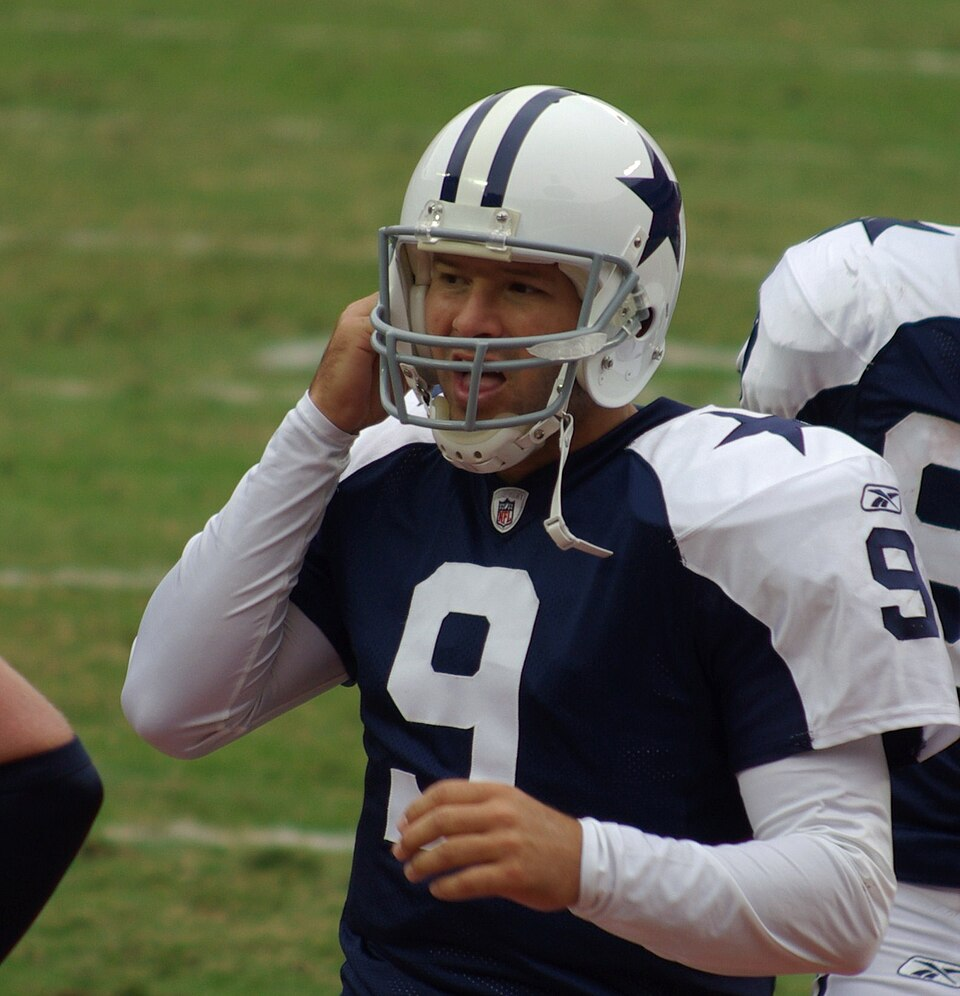

This page tracks the news that actually moves betting markets: major injuries, trades, suspensions, line movement, and futures-impacting developments across MLB, NFL, NBA, NHL, college sports, and soccer. Instead of generic headlines, the focus is on what each story means for the number, the matchup, and the board.
Pair the news below with the rest of the site: see the current plays on Upcoming Picks, the reasoning in the betting analysis blog, results on the verified records, and league previews for MLB, NFL, NBA, NHL, college football, college basketball, and soccer.
Posted: July 31, 2026 – 2:15 PM

CBS Sports' lead NFL analyst Tony Romo is on leave from the broadcast booth after being arrested on suspicion of driving while intoxicated, and with training camps opening and the season bearing down, the network still has not said when, or if, he is coming back. Here is what has actually been confirmed, what CBS has done about it, and where his job stands right now.
According to the Milwaukee County Sheriff's Office, Romo was pulled over on southbound Interstate 43 around 6:18 p.m. local time on Thursday, July 23, after a deputy reported seeing him pass other vehicles illegally. Once stopped, the deputy said Romo had "red glassy eyes" and an odor of alcohol, and that he performed poorly on standardized field sobriety tests. He was booked on one count of operating a vehicle while intoxicated and was also cited for having an open container of alcohol in the car and for the unsafe passing that triggered the stop. Romo, 46, was released after booking and is due in court on September 21, a date that lands on a Monday night during the NFL season.
It is worth being precise about where this stands legally: Romo has been arrested and cited, not convicted. No plea has been entered publicly and the case is still working through the system. What is not in dispute is the professional fallout, which moved fast.
Just over a week after the arrest, CBS Sports placed Romo on leave "until further notice," pulling him off his usual duties as the network's top color analyst alongside play-by-play voice Jim Nantz. CBS has not laid out a timeline for a return and has not announced any disciplinary outcome beyond the leave itself. In the meantime, the network has moved J.J. Watt into the lead analyst chair alongside Nantz for however long Romo is out, an emergency fix rather than a permanent swap, at least as far as CBS has said publicly.
So does this mean CBS is about to fire him? Nothing said publicly points that way, and the money involved makes an outright firing complicated. Romo signed a 10-year, roughly $180 million contract with CBS that runs through 2030, reportedly making him the highest-paid game analyst in sports broadcasting. Unless CBS has specific language in that deal carving out an exit for exactly this kind of incident, cutting him loose would likely mean paying out the remaining contract anyway, which is a heavy price for a network to eat rather than simply waiting out a leave. That financial reality is a big part of why "on leave" rather than "fired" is where things sit today.
That does not mean Romo's seat is guaranteed to be waiting for him exactly as he left it. Andrew Marchand of The Athletic has reported that Romo will have to make a real case internally to get his top job back once the leave ends, and Watt's strong debut alongside Nantz gives CBS a legitimate alternative if executives decide a longer transition makes sense. For now, the most accurate read is: not fired, contract intact, job paused, and the next real checkpoint is either a CBS decision on his return or his September 21 court date, whichever comes first.
We will keep this updated as CBS makes further decisions and as the Wisconsin case moves through court. For now, treat anything beyond the confirmed facts above as speculation.